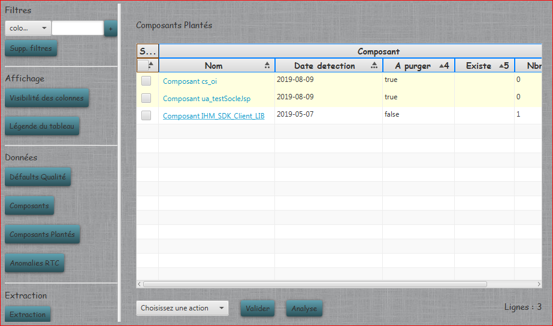
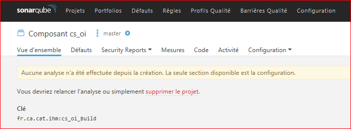
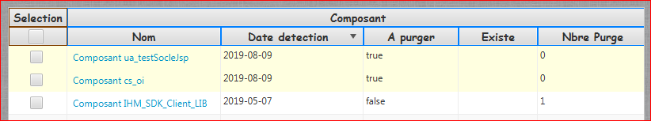
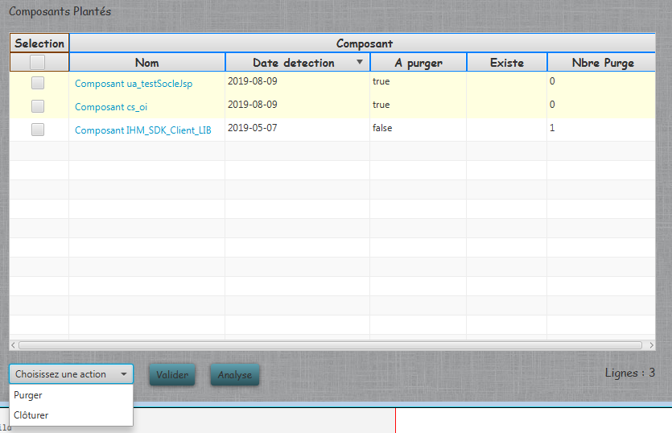

Composants plantés
Affiche la liste de tous les composants qui n'ont jamais eu d'analyse réussie dans SonarQube. Pour voir l'utilisation du menu de gauche, merci de vous reportez au chapitre BDD.


S'il n'y a pas de log disponible côté SonarQube, il faut demander à la plateforme de fab, s'il peuvent trouver la raison de ce plantage.
Le menu en bas permet permet d'effectuer toutes les actions de contrôle sur ces composants :
- Le bonton Analyse permet de vérifier la présence de composants plantés sur le serveur. Ceux-ci apparaissent en jaune claire dans la liste.

Les composants purgés sont en blanc, et les composants qui ont une analyse qui est passée repassent en vert.
- Le bouton Valider permet de lancer l'action choisie sur les composants selectionnés :
- Purger : Supprime le composant du serveur SonarQube.
- Clôturer : Supprime le composant de la liste une fois l'analyse de celui-ci réussie.
